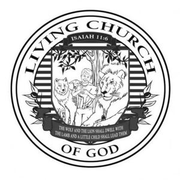

Trade Mark Journal No.2025/039 26 September 2025
WO0000001874013 (9,16)
Office of origin: United States of America

The mark consists of Circular shape with the wording "LIVING CHURCH" at the top and "OF GOD" at the bottom of the outer rim, a lined background in the center with a shield-shaped center section depicting a child holding a lamb with wolf on the left, a lion on the right and an olive-bearing olive tree in the background with a ribbon on the top containing the text "Isaiah 11:6" and a ribbon at the bottom containing the text "THE WOLF AND THE LION SHALL DWELL WITH THE LAMB AND A LITTLE CHILD SHALL LEAD THEM" -- with olive-bearing olive branches sticking out of each side of said bottom ribbon.
Isaiah 11:6 and The wolf and the lion shall dwell with the lamb and a little child shall lead them
- Class 9
- Downloadable electronic publications in the nature of magazines in the field of religion and electronic publications, namely, magazines featuring religious matter recorded on computer media.
- Class 16
- Printed magazines in the field of religion; book covers.
LIVING CHURCH OF GOD (INTERNATIONAL), INC.
Representative: Stephanie Scruggs Bradley Arant Boult Cummings LLP, 1900 K Street NW, Suite 800, Washington DC 20006, UNITED STATES OF AMERICA